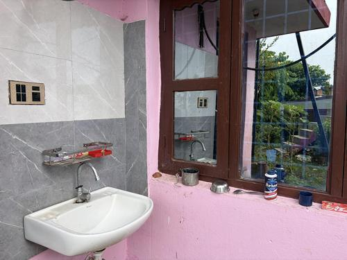
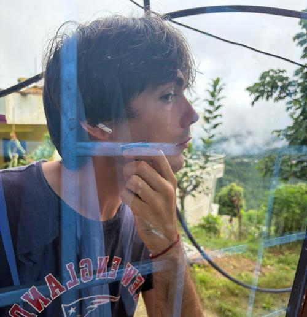
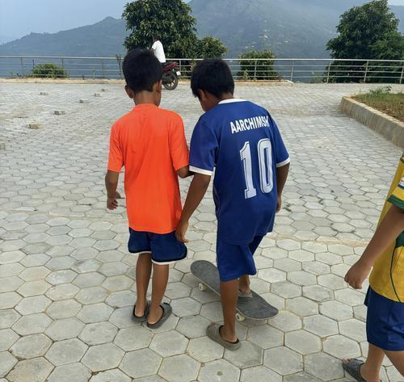
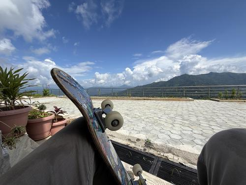

Shaving, Skating

Compared to the US, the bathrooms in Nepal are quite different. Next to my bedroom (the window of which is featured here) is a sink, and through the door just out of frame to the left is the latrine. Most bathrooms in Nepal feature squat toilets rather than western style, and often instead of a shower head just a tap in the wall at about waist height. I won’t get far into the logistics of using the squat toilet, but you get a hang of it pretty quick, often with a hiccup or two along the way. I’ll admit the first time is a little daunting.
This morning I shaved before I headed to school. I normally shave once every week or so. Since arriving in Nepal I’ve slightly changed my shaving habits from home, and have been exploring shaving as something I’ve done for a long time but never really paid much attention to. For those reading who shave their face, I encourage you to try safety razors for a more environmentally friendly shave, and leaving the shaving cream on a bit longer before you start shaving.

You’ll note that my window is effectively the mirror for this sink. It’s always funny when I’m in my room and one of my neighbors walks up to check their appearance before heading out for the day.
Since coming to Nepal, I have been skateboarding significantly less than I do at home. I picked up a board when I first got to my permanent site, but I didn’t really think there was anywhere I could use it. There is a large municipal building just up the road from my host family’s house which I assumed was off limits - my host brother insisted otherwise. We tried it, and some of the staff came out to watch us with the skateboard. It was a big hit.

My host brother and a few of his friends. I don’t recommend skating in slides, but they handled it well.
The kids were quickly obsessed. For the next week or so every day I would get multiple knocks on my door from various neighborhood children asking to use the skateboard. some of them standing on it, some just wanted to sit on it and go down a small hill. I’d occasionally have to tell them that someone was already using it and point them in the direction of my best guess as to where the previous group had taken the thing.
This board is pretty crummy, the pavement isn’t particularly smooth, and it can be hard to find the energy to go skating after teaching all day, especially with how hot it’s been. Still, one of the 3 official goals of the Peace Corps is sharing some American culture with Nepal, and it’s nice to have a good downtime activity for the weekends when the weather is nice.

As always, thanks for reading. If the weather is nice wherever you are, try to get out today!
- Basanta